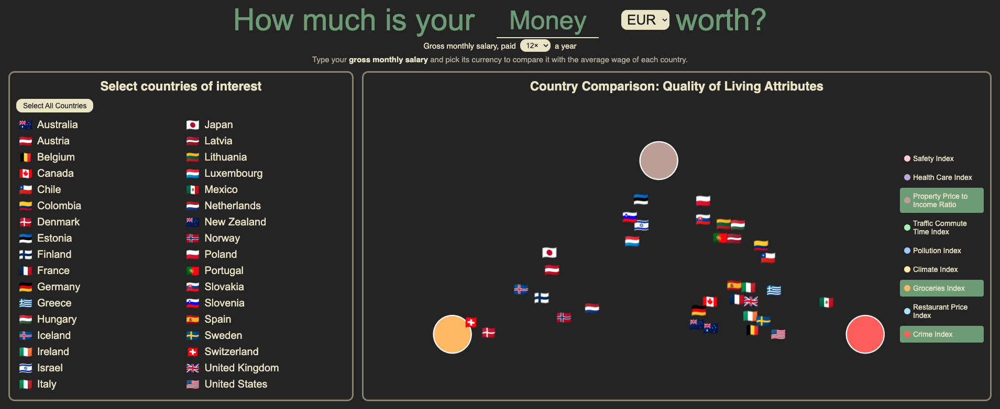
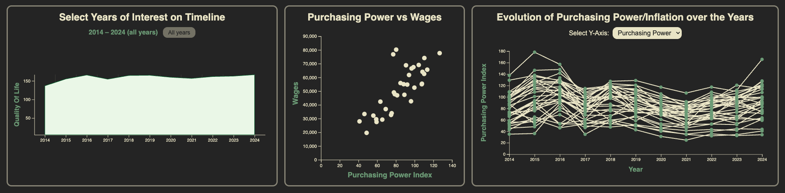
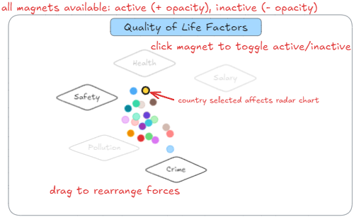
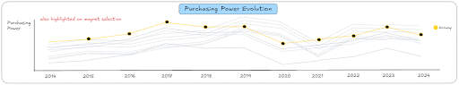
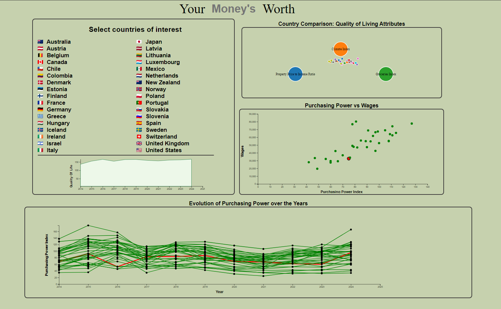

Information Visualization · D3.js
Your Money's Worth
Where does a salary go furthest? This interactive dashboard compares purchasing power, cost of living, inflation and quality of life across OECD countries from 2014 to 2024.


Data
We merged Numbeo indices (quality of life, cost of living, crime, property prices), OECD wages and a global inflation dataset. Then we derived metrics such as the salary-to-cost ratio, inflation-adjusted cost of living and the change in purchasing power. Countries without OECD wage data were dropped.
Coordinated views
- Country list with flags in two columns, to avoid scrolling and overlap. Hovering a country highlights it everywhere, and clicking filters every chart to it.
- Scatter plot of purchasing power against wages, filtered by a year-range slider.
- Line chart showing purchasing power over time, with a widget to switch it to inflation. This replaced an early radar chart that made linked interaction too fragile.
The magnet chart
The most unusual view is the magnet chart. Each magnet is an attribute, such as groceries, property price to income or climate. Each country is a point pulled towards every magnet in proportion to its normalized value for that attribute:
position = Σ (valueₐ × magnetₐ) / Σ valueₐ
You can drag the magnets to rearrange the forces. A D3 force simulation then recomputes every country's position, so clusters of similar countries emerge as you explore.
From sketch to prototype
The views started as design sketches and went through an intermediate prototype before reaching their final form.



Try it yourself
The dashboard runs in the browser. Type your gross monthly salary and pick its currency to see how it compares with the average wage in each country. Then brush the timeline to pick years, click countries to filter, and drag the magnets around. It works best on a desktop screen.